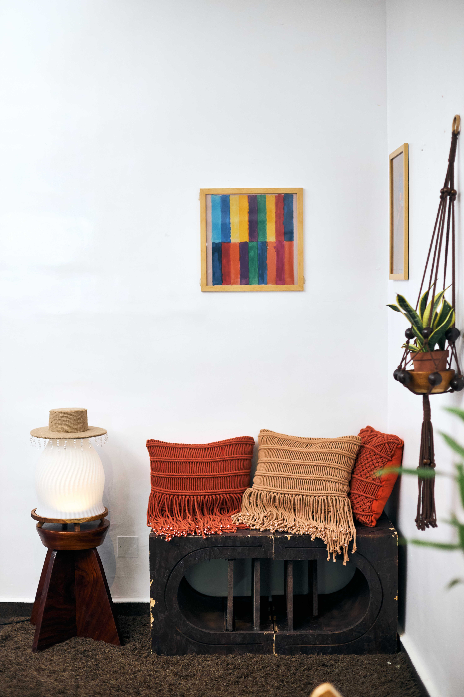
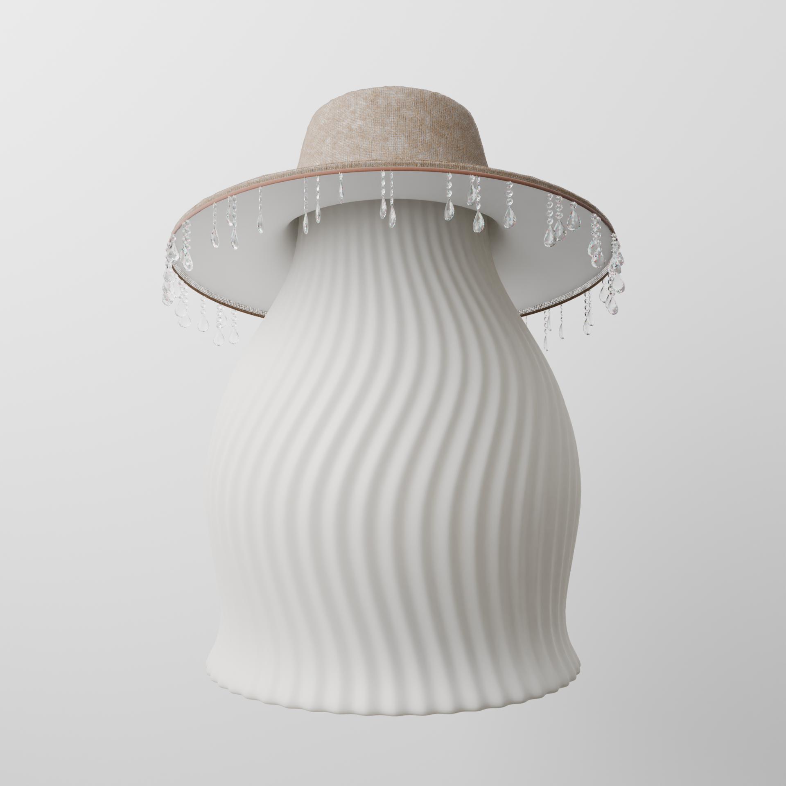
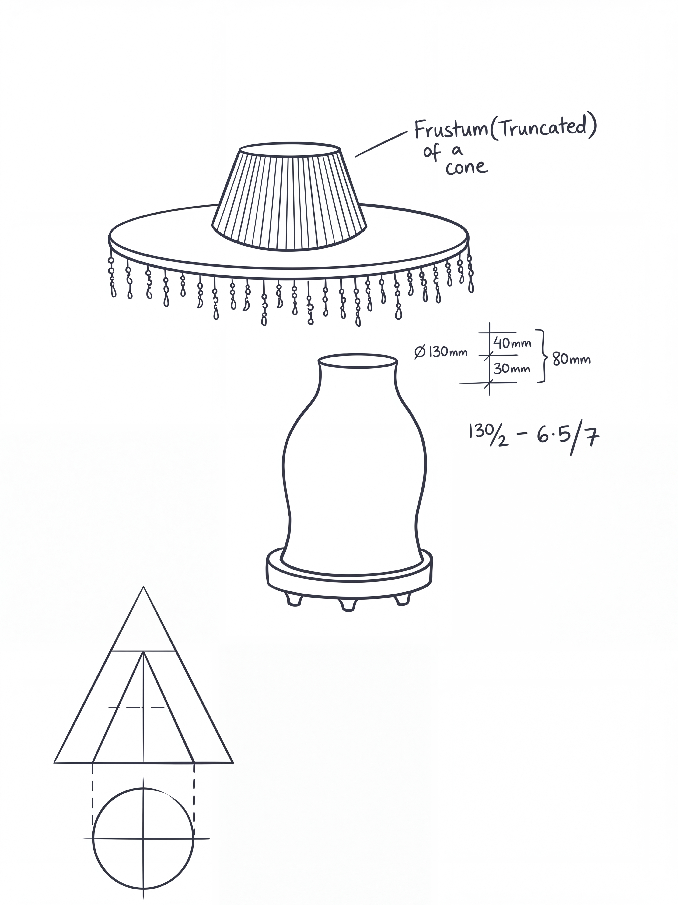
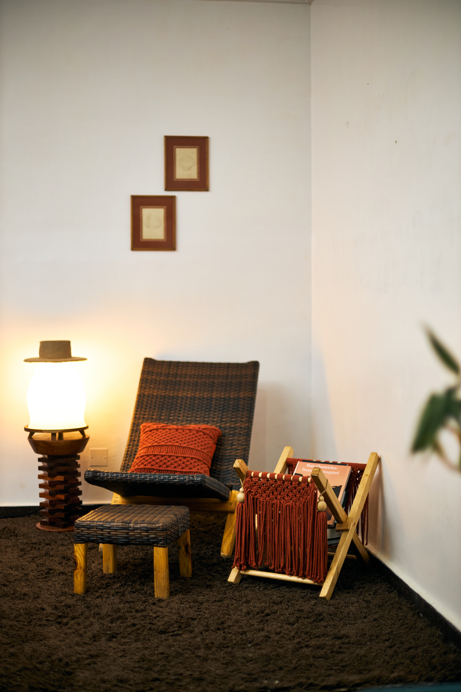

A Global African Renaissance
The global art and design landscape is undergoing a profound transformation. For decades, African design was often relegated to anthropological archives or misread through a Eurocentric lens. Today, however, a vibrant renaissance is underway. Trailblazers like the British-Nigerian artist and designer Yinka Ilori have boldly reshaped the global stage. By fusing his heritage with contemporary aesthetics, Ilori has proven that African visual systems hold immense power, narrative depth, and universal appeal.
Following this trajectory is a new wave of emerging talents who are deeply committed to cultural inquiry and material exploration. Among them is Ezekiel Osunlana, an architecture student and designer based in the historic city of Ile-Ife, Nigeria. His practice represents the next chapter in this global movement—one that seeks to imbue contemporary objects with the weight of history, the brilliance of African visual systems, and the indelible soul of tradition.


Designer or Artist?
At the core of his philosophy is a dedication to infusing everyday items with meaning. “A wooden stool is not merely a surface to sit on; it holds the memory of the tree it came from, the hands that shaped it, the compound it stood in... This invisible cargo is what I call the soul of the object.”
“I often ask myself, am I a designer or an artist?” Osunlana reflects. His work sits comfortably at the intersection of both disciplines, blending material exploration with rigorous cultural inquiry. For him, design provides the analytical freedom to reshape, select, and reject. Art, conversely, offers the emotional space where visual language becomes a vessel for the stories, textures, and rhythms that form identity.
“Every object that has passed through human hands carries more than its function.”

The Form of Eko Culture
Drawing inspiration from the iconic Eko culture of Lagos, the lamp's silhouette immediately recalls the sweeping, majestic forms of the Eyo masquerade. The wide-brimmed hat, delicately adorned with crystal bead fringes, sits atop a gently glowing, flowing body—sparking nostalgia and taking viewers down memory lane to the bustling streets of Lagos.
Tradition as Regeneration
For Osunlana, tradition is a major source of inspiration, but he is quick to clarify its role. Tradition is not stagnation; rather, it is a “regenerative consciousness of life in all its various manifestations.” It is born of every living experience, not buried in the stillness of antiquity.
In a contemporary world that often exerts immense pressure to optimize, flatten, abstract, and universalize, Osunlana's insistence on preserving the soul of the object is an act of creative defiance. “To strip an object of its soul is not to simplify it,” he says, “it is to silence it.”

An Act of Cultural Repair
An object that knows its origins has a gravitational pull. It anchors the people who encounter it, offering a vital point of orientation in a world moving too fast to remember itself. This mission is especially urgent for cultures whose artifacts have historically been displaced, misread, or absorbed into foreign archives.
Through creations like the Eyo Lamp, Osunlana is doing more than just designing lighting fixtures. “To restore these objects even partially, even speculatively,” he notes, “is an act of cultural repair.” As African designers continue to rise globally, their work reminds us that the future of design lies in illuminating the soul of the past.